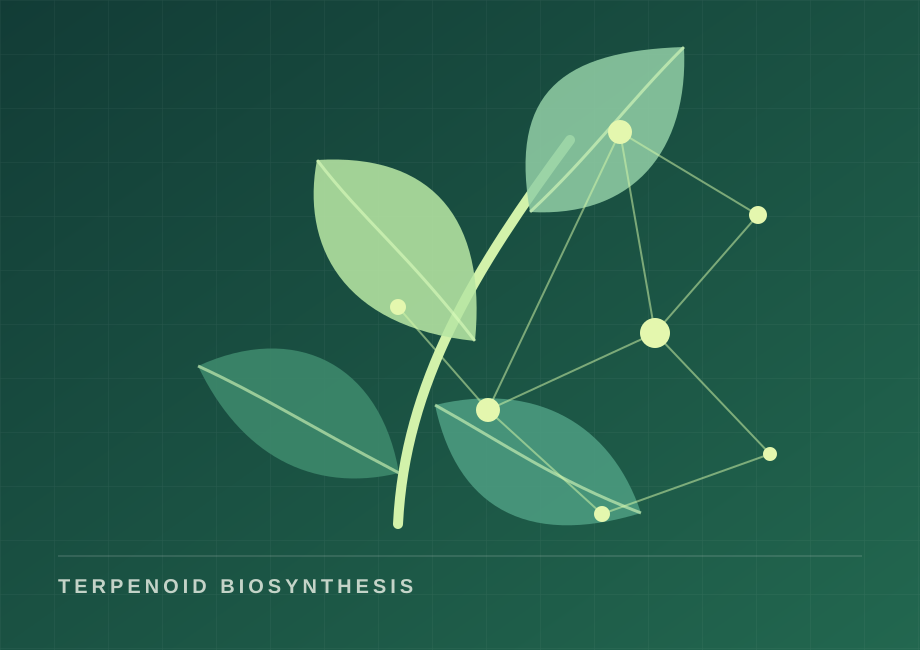
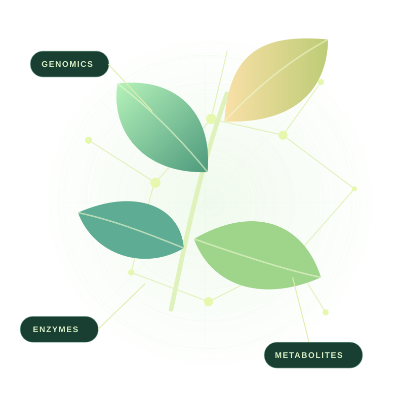
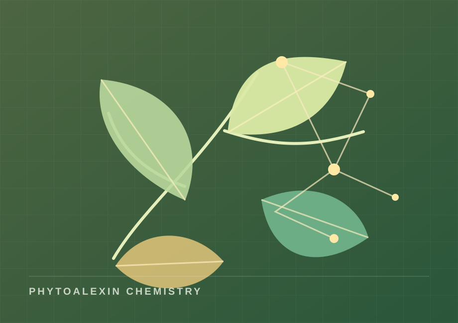
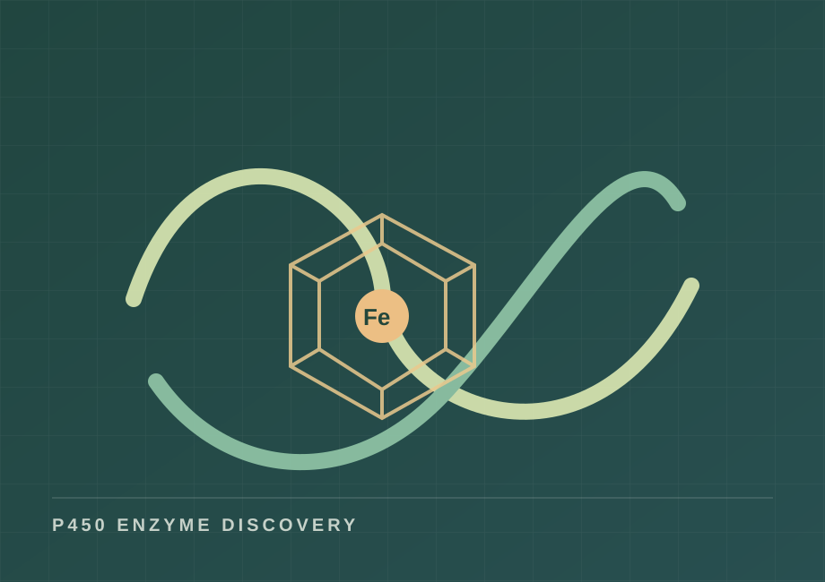

01 / Current research
Reconstructing salvinorin biosynthesis
Connecting candidate genes with the late-stage enzymatic steps that diversify Salvia divinorum diterpenoids.
Explore the researchI’m Praveen Khatri, a Phytochemist investigating how genes, enzymes and evolution shape the extraordinary chemical diversity of plants.

I combine computational discovery with experimental biochemistry to reveal what plant metabolic enzymes do and why they matter.

Connecting candidate genes with the late-stage enzymatic steps that diversify Salvia divinorum diterpenoids.
Explore the research
Identifying the cytochrome P450 enzymes that complete a central soybean defense pathway.
Explore the research
Exploring how related CYP81E enzymes produce chemically distinct isoflavonoids.
Explore the researchOur study identified three cytochrome P450 prenyl cyclases catalyzing the final step of glyceollin biosynthesis, linking enzyme discovery to a key plant defense pathway.
Read the paperA pathway is more than a list of genes. The most compelling insights connect sequence, catalysis and biological context.
More about my approachFind candidate genes using comparative genomics, transcriptomics and evolutionary context.
Test biochemical functions through heterologous expression and functional assays.
Connect reactions with chemistry using HPLC, LC–MS, GC–MS and related analytical methods.
Place molecular discoveries in networks of plant defense, regulation and adaptation.
University of Toronto · CAD 30,000 independent research support.
Phytochemical Society of North America.
University of Toronto Mississauga.
Writing News & Views articles for Plant Physiology to communicate emerging work across plant science.
Editorial contributions to a collection on the discovery, function and innovation of plant specialized metabolism.
Webmaster and former Young Members Committee chair supporting engagement and scientific exchange.
Interested in natural-product biosynthesis, biochemical discovery or collaborative research? I would be glad to hear from you.